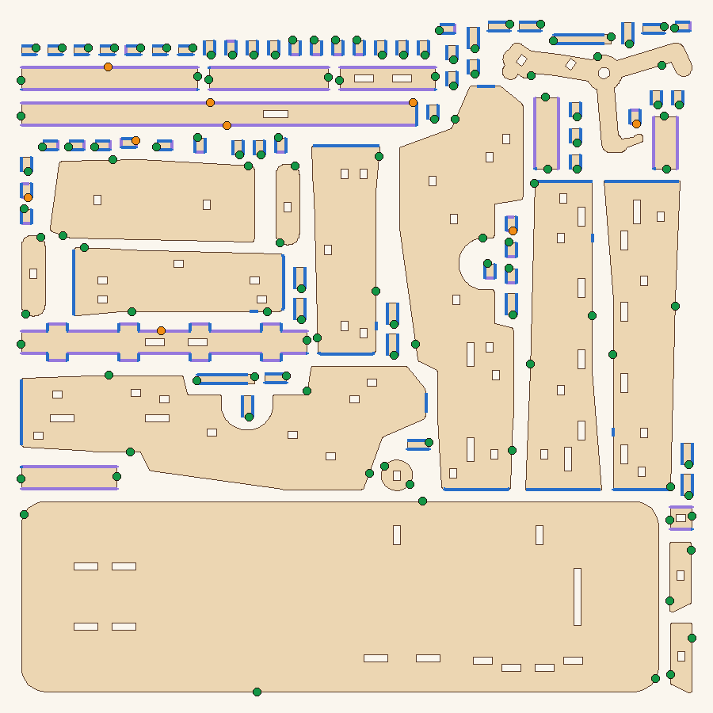
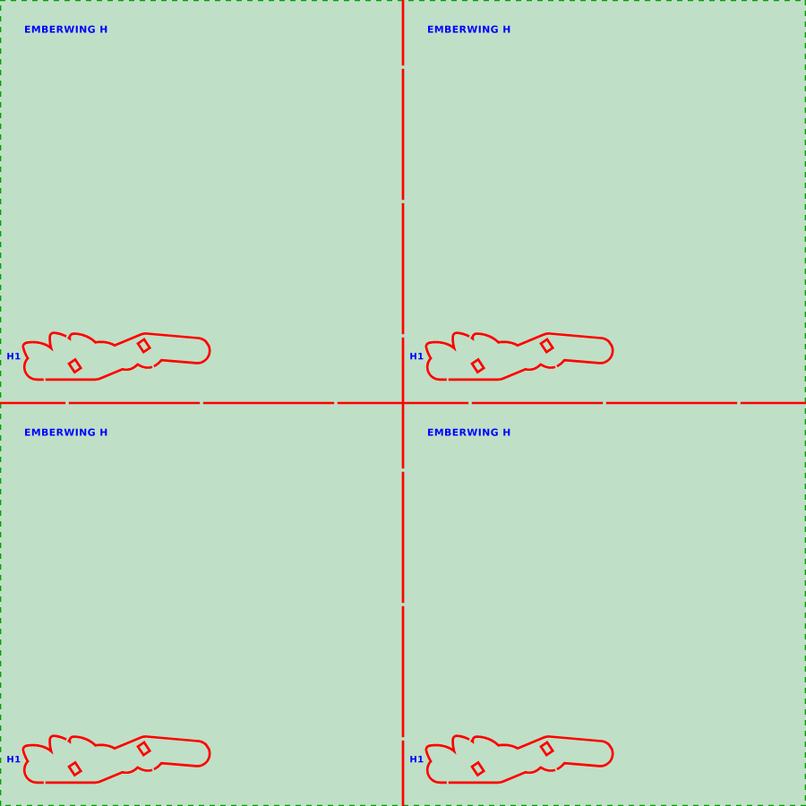

kits/<kit>/popout/)A lamp or windowPlanner tablet

Hartwood Designs, SOP-3, Rev A, 2026-10-12. Times and settings marked Estimate are planning numbers until measured on the real machine. Machine details follow the OMTech manual when it differs from this sheet.